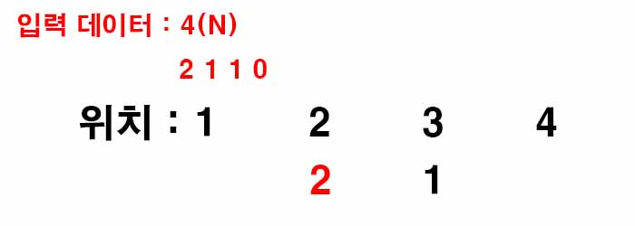

백준 1138. 한 줄로 서기
- https://www.acmicpc.net/problem/1138
-
문제 :
N명의 사람들은 매일 아침 한 줄로 선다. 이 사람들은 자리를 마음대로 서지 못하고 오민식의 지시대로 선다.
어느 날 사람들은 오민식이 사람들이 줄 서는 위치를 기록해 놓는다는 것을 알았다. 그리고 아침에 자기가 기록해 놓은 것과 사람들이 줄을 선 위치가 맞는지 확인한다.
사람들은 자기보다 큰 사람이 왼쪽에 몇 명 있었는지만을 기억한다. N명의 사람이 있고, 사람들의 키는 1부터 N까지 모두 다르다.
각 사람들이 기억하는 정보가 주어질 때, 줄을 어떻게 서야 하는지 출력하는 프로그램을 작성하시오. -
입력 :
첫째 줄에 사람의 수 N이 주어진다. N은 10보다 작거나 같은 자연수이다. 둘째 줄에는 키가 1인 사람부터 차례대로 자기보다 키가 큰 사람이 왼쪽에 몇 명이 있었는지 주어진다. i번째 수는 0보다 크거나 같고, N-i보다 작거나 같다. i는 0부터 시작한다. -
출력 :
첫째 줄에 줄을 선 순서대로 키를 출력한다. -
풀이 :
1부터 N까지 차례대로 서 있는 위치를 구한다.
기본적으로 입력받은 데이터 값 + 1을 위치로 잡고 거기에 사람이 있을 경우 빈 곳이 나올 때까지 뒤로 가면 된다.
1보다 작은 수는 없으므로 1의 위치는 입력받은 데이터 값 + 1이 될 것이다.

1의 위치를 정했으므로 그 다음 2의 경우 2보다 작은 수는 없으므로 앞에 1이 없는 이상 2의 위치는 입력받은 데이터 값 + 1이 될 것이다.
3의 위치를 정해야 하는 데 입력받은 데이터 값 + 1의 위치에는 이미 줄 서 있는 사람이 있으므로 빈 곳이 나올 때까지 뒤로 간다. 빈 곳이 나오면 거기가 3의 위치이다.
마지막 수의 경우 남은 빈 곳이 마지막 수의 위치가 될 것이다.